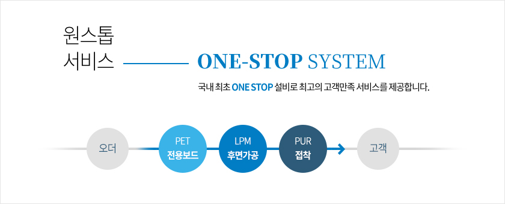

    <div class="busi-intro-wrapper">
        <div class="busi-intro-container">

            <div class="busi-intro-content">            
                <h3 class="busi-intro-ttl"><p>MDF(Medium Density Fiberboard)</p></h3>
                <p class="busi-intro-txt">가구소판 및 건축내장재로 사용되며, 국내 최초 Super-E0 개발, 포름알데히드 방출량을 최소화함으로써 최고의 품질과 서비스를 제공합니다.</p>

                <div class="busi-intro-prod-box">
                    <h3 class="busi-intro-prod-ttl">Products</h3>
                    <p class="busi-intro-prod-txt"><span>색상에 의한 구분	HI-Q, GREEN</span></p>
                    <p class="busi-intro-prod-txt"><span>밀도에 의한 구분	STANDARD, LIGHT, S-LIGHT, 인테리어보드</span></p>
                </div>

                <h3 class="busi-intro-ttl"><p>LPM(Low Pressure Melamine)</p></h3>
                <p class="busi-intro-txt">다양한 디자인이 인쇄된 무늬지를 MDF 표면에 고온 압착한 제품으로, 가구와 인테리어 마감재로까지 기능을 확장한 제품입니다.</p>

                <h3 class="busi-intro-ttl"><p>PET 가공보드(PET Board)</p></h3>
                <p class="busi-intro-txt">인체에 무해한 PET시트를 친환경 공법으로 MDF 표면에 접착한 보드로서, 고급 주방가구 및 붙박이장 도어에 주로 사용됩니다.</p>

                <div class="busi-intro-sub-box">
                    <h3 class="busi-intro-sub-ttl">국내 최초 ONE STOP SYSTEM</h3>
                    전용 보드부터 PET 접착까지 원스탑으로 제공하여 최고의 고객만족 서비스를 제공합니다.

                    
                </div>
                <div class="busi-intro-sub-box">
                    <h3 class="busi-intro-sub-ttl">Features</h3>
                    <ul class="busi-intro-sub-list">
                        <li class="busi-intro-sub-item"><span>평활도 우수</span></li>
                        <li class="busi-intro-sub-item"><span>접착성 우수</span></li>
                        <li class="busi-intro-sub-item"><span>국산소나무</span></li>
                    </ul>   
                </div>

                <div class="busi-intro-prod-box">
                    <h3 class="busi-intro-prod-ttl"><p>Products</p></h3>
                    <p class="busi-intro-prod-txt">하이 그로시 (Hi Glossy), 슈퍼매트 (Super Matt), 스테인리스스틸 (Stainless Steel), 미러글라스 (Mirror Glass)</p>
                </div>

                <h3 class="busi-intro-ttl"><p>가구도어(Furniture Door)</p></h3>
                <p class="busi-intro-txt">표면 가공된 보드를 재단, 엣지마감, 보링의 공정을 거쳐 만들어진 가구도어 완제품입니다.</p>
            </div>
            <!-- /.busi-intro-content -->
        </div>
        <!-- /.busi-intro-container -->
    </div>
    <!-- /.busi-intro-wrapper -->